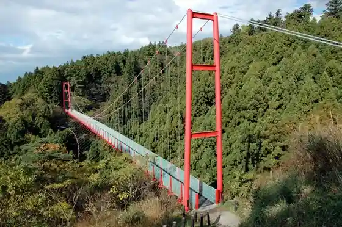
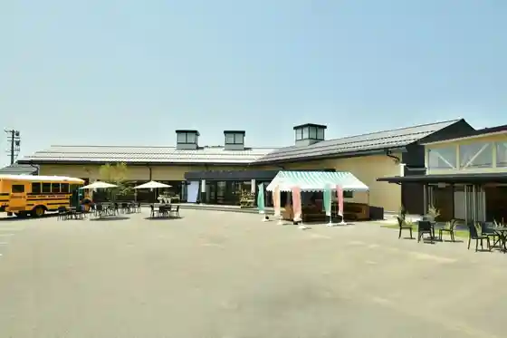
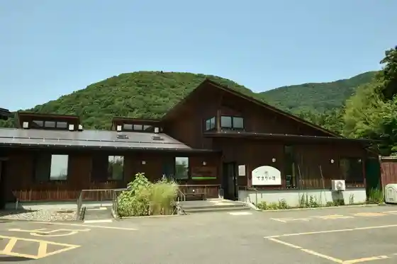
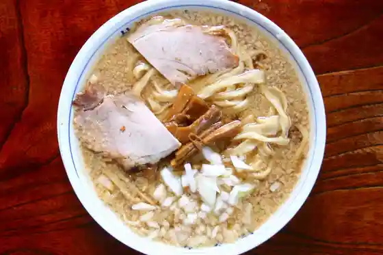

Sen Me Do Suspension Bridge
Tsubame, Niigata · 0256-77-8233 · Official / source link

Roadside Station SORAIRO Kuni Ue
Tsubame, Niigata · 0256-98-0770 · Official / source link

Temari Baths
Tsubame, Niigata · 0256-97-1755 · Official / source link

Kuni Uedera (Kokujoji)
Tsubame, Niigata · Official / source link
Tsubame no Sorufudo (Tsubame Seabura Ramen)
Tsubame, Niigata · 0256-64-7630 · Official / source link

Tsubame Sakura Festival Bunsui Oiran Dochu
Tsubame, Niigata · 0256-64-7630 · Official / source link
Kuni Ueyama
Tsubame, Niigata · 0256-77-8233 · Official / source link
Tsubame Kotsu Park
Tsubame, Niigata · 0256-64-4680 · Official / source link
Gogo Iori
Tsubame, Niigata · 0256-97-3758 · Official / source link
Tsubame Sangyo Shiryo Kan
Tsubame, Niigata · Official / source link
Kosugi Farm
Tsubame, Niigata · 0256-62-3897 · Official / source link
Omagari River Park
Tsubame, Niigata · Official / source link
Shinanogawa Okawatsu Museum
Tsubame, Niigata · Official / source link
Okawatsu Bunsui Sakura Namiki
Tsubame, Niigata · 0256-64-7630 · Official / source link
Yoshida Fureai Plaza
Tsubame, Niigata · Official / source link
Echigo Tsubame no Tenjin Ko
Tsubame, Niigata · 0256-77-8231 · Official / source link
Tamagawa Do
Tsubame, Niigata · 0256-62-2015 · Official / source link
Chitan Sei Kakushu Supun Ya Foku Sanka Hasshoku
Tsubame, Niigata · 0256-63-7666 · Official / source link
Saito Ichigo Sono
Tsubame, Niigata · 0256-47-1519 · Official / source link
Jimoto no Shacho Tachiga Hirome Ta (Kama Meshi)
Tsubame, Niigata · 0256-64-7630 · Official / source link
Otsu Kogami Sha Soan (Otogojinjasoan)
Tsubame, Niigata · 0256-77-8233 · Official / source link
Kuni Ue Kenko no Mori Park
Tsubame, Niigata · 0256-98-0770 · Official / source link
Tsuiki Doki Seisaku Experience
Tsubame, Niigata · Official / source link
Shiawase no Osuso Wake Kyandoru Tsukuri
Tsubame, Niigata · Official / source link
Suzu Gui Nomi Seisaku Experience
Tsubame, Niigata · 0256-63-7666 · Official / source link
Hachi Oji no Oshiro Fuji
Tsubame, Niigata · 0256-64-7630 · Official / source link
Tsubame Chozen Kan Shiryo Kan
Tsubame, Niigata · Official / source link
Tsubame Bunsui Ryokan Shiryo Kan
Tsubame, Niigata · Official / source link
Kuni Ueyama Kuni Uedera Waki Tozanguchi
Tsubame, Niigata · 0256-64-7630 · Official / source link
Tsubame Bunsui Bijitasabisu Center
Tsubame, Niigata · Official / source link
Tojiro Naifugyararii / Opunfakutorii
Tsubame, Niigata · 0256-93-4195 · Official / source link
Tsubame Yahiko Wo Kanko Takushii Demeguru Tabi [ Ryokan Meguri Kosu ]
Tsubame, Niigata · 0256-38-2021 · Official / source link
Beino Tsu Inseki Rakka Chi Kinenhi
Tsubame, Niigata · 0256-63-7002 · Official / source link
Tsuiki Doki no Kozara / Kappusosa Zukuri Experience
Tsubame, Niigata · Official / source link
Yu Gure no Oka
Tsubame, Niigata · 0256-77-8233 · Official / source link
Tsubame no Ichibi
Tsubame, Niigata · 0256-77-8231 · Official / source link
Biakappu or Supun no Migaki Experience
Tsubame, Niigata · 0256-61-6701 · Official / source link
Sekai Nihitotsu no Makoto Chu Sei Jogi Tsukuri
Tsubame, Niigata · Official / source link
Hocho Togi Naoshi Experience (Kyushichu)
Tsubame, Niigata · 0256-93-4195 · Official / source link
Tsubame Migaki Ya Ichiban Kan
Tsubame, Niigata · 0256-61-6701 · Official / source link
Chokin Seisaku Experience
Tsubame, Niigata · Official / source link
Suzu (Suzu) no Kozara Tsukuri Experience
Tsubame, Niigata · Official / source link
Tsuchi Me (Tsuchime) Ire Experience
Tsubame, Niigata · Official / source link
(Shinchu Akusesarii) (Teiisupun) Zukuri
Tsubame, Niigata · Official / source link
(Chiisa Na Utsuwa Zukuri) Tsuchi Me (Tsuchime) Ire Wo Experience
Tsubame, Niigata · Official / source link
Shakyo Kai Sha Hotoke Kai
Tsubame, Niigata · Official / source link
Yosetsu Gijutsu Wo Tsukatta Ato Experience
Tsubame, Niigata · Official / source link
Komeabura, Kome Nukawo Haigo Shita Tezukuri Ishi Ken Experience
Tsubame, Niigata · 0256-93-0333 · Official / source link
Suzu (Suzu) Gui Nomi Tsuchi Me (Tsuchime) Ire Experience
Tsubame, Niigata · Official / source link
Tsubame Yahiko Wo Kanko Takushii Demeguru Tabi [ Iitoko Meguri Kosu ]
Tsubame, Niigata · 0256-38-2021 · Official / source link
Tsuiki Doki no Tsutsu Hanaire Re Seisaku Experience
Tsubame, Niigata · 0256-63-7666 · Official / source link
Kuni Ueyama Ryokan Shiseki Boranteiagaido
Tsubame, Niigata · 0256-64-7630 · Official / source link
Tsubame Bunsui Ryokan Shiryo Kan
Tsubame, Niigata · Official / source link